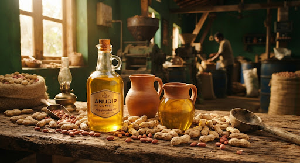
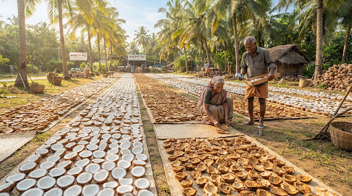
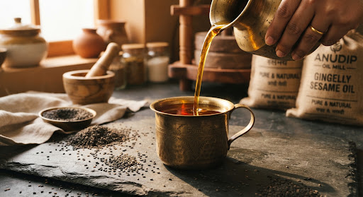
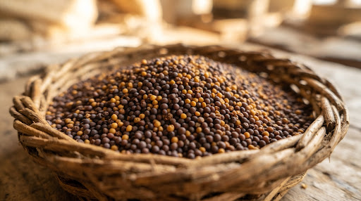
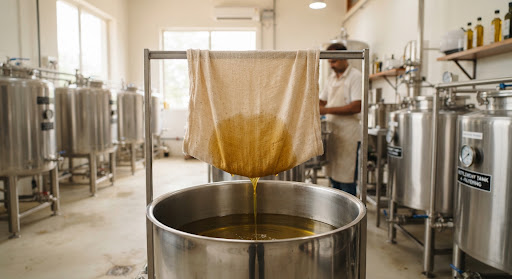
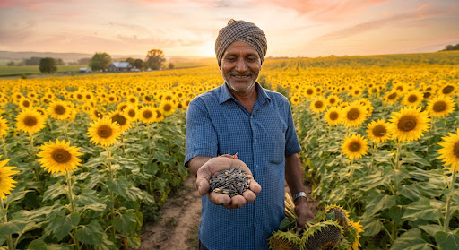
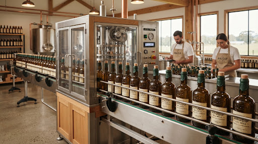

Groundnut Oil
Selected groundnuts prepared for traditional oil extraction.
View Details →A glimpse into our natural ingredients, authentic wood press extraction, and dedicated artisans.

Slow pressed groundnut oil made from carefully selected natural ingredients.
Selected groundnuts prepared for traditional oil extraction.
View Details →
Coconut prepared naturally before the oil-making process.
View Details →
A traditional approach to extracting natural edible oils.
View Details →
Sesame seeds prepared for natural edible oil production.
View Details →
Carefully selected mustard seeds before processing.
View Details →
A careful filtration stage before the finished oil is prepared.
View Details →
Natural sunflower seeds selected for oil production.
View Details →
Finished oil prepared for packaging and delivery.
View Details →Discover how carefully selected ingredients become quality edible oils through our traditional process.